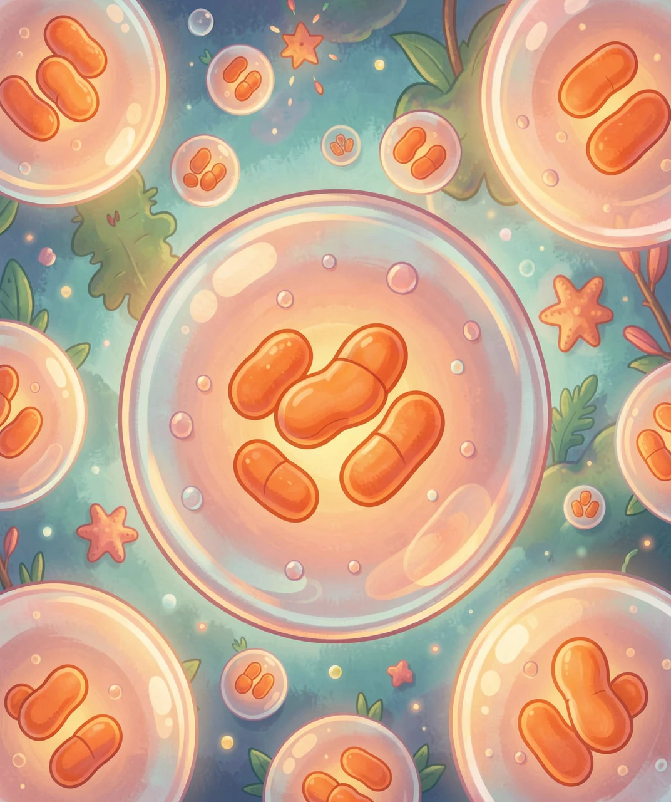
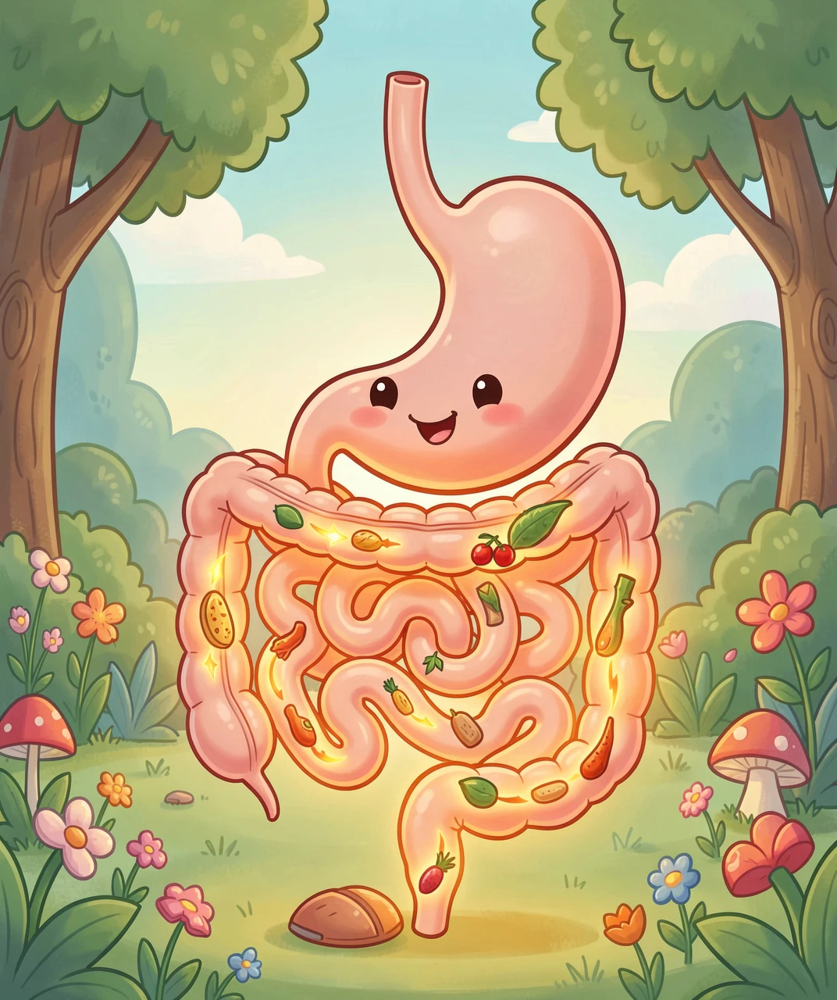
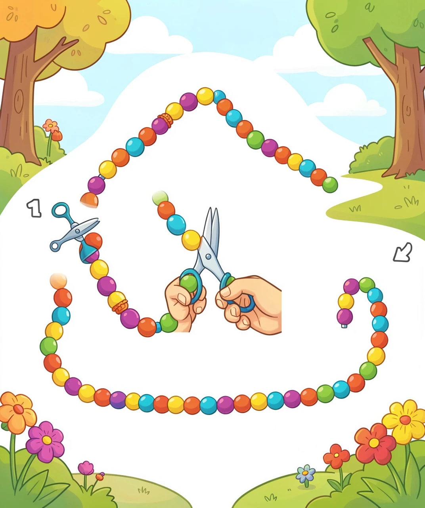
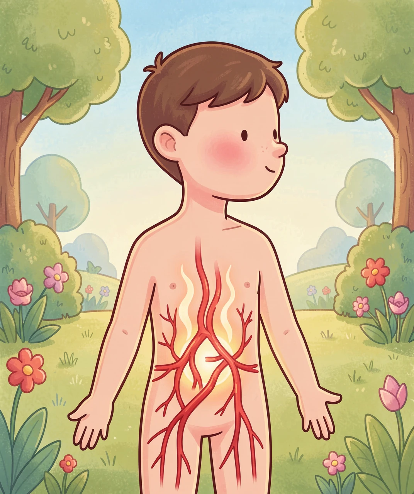
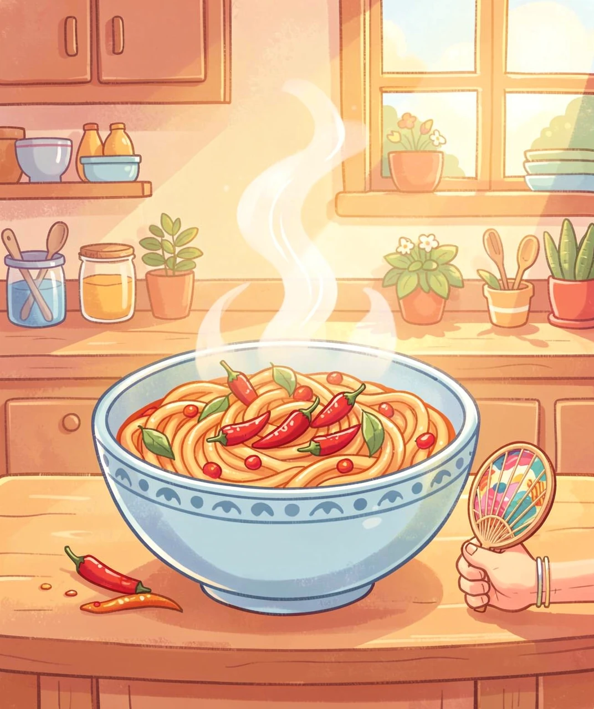

一场发生在你身体里的「生火」与「散热」大作战
吃完一碗热汤面，脸红扑扑、身上暖烘烘，有时候还会冒汗。很多人以为："是饭菜太烫了。"可你喝一碗冰凉的果汁，身体照样会慢慢热起来——这说明，热量不是从外面"带"进来的。
那热量到底从哪来？追到最根本的一层：你的身体里有几十万亿个小火炉。每一个细胞里都有一种叫线粒体的小结构，它们的工作就是把食物里的化学能"烧"掉，转化成身体能用的能量。这个过程叫细胞呼吸——没错，你的每个细胞都在"呼吸"。
关键在这里：能量转换从来不是百分之百的。就像汽车发动机烧汽油，一部分变成动力，还有很大一部分变成了热——发动机是烫的。你的细胞也一样，"烧"食物的时候，相当一部分能量没能存起来，而是直接变成了热。这些热，正好用来把你维持在 37℃ 左右。所以你不是"被饭菜烫热的"，你是自己烧热的。

既然细胞一直在烧，为什么吃完饭会格外热？因为从你咬下第一口开始，身体就启动了一整套浩大的"加工工程"，而这套工程本身是要花力气的。
我们一项项数：牙齿咀嚼要动肌肉；胃要不停地蠕动搅拌，还要分泌胃酸；小肠要分泌消化液；营养被吸收进血液时，很多得靠主动运输——就像逆着人流推车进门，得消耗细胞的"能量币" ATP；吸进来的营养还要先送到肝脏去加工、分类、储存（比如把多余的糖变成糖原存起来、把氨基酸重新组装成身体需要的蛋白质）。
这一整套加起来，科学家给它起了个名字：食物热效应（也叫食物的特殊动力作用）。意思很直白——为了处理这顿饭，身体自己先烧掉了一部分能量，而这部分能量最后基本都变成了热。吃得越多，这套工程越浩大，热得越明显。

上一章留了个问题：同样是食物，为什么蛋白质的加工费这么高？继续往下追。
蛋白质是一长串氨基酸串成的链条，像一条很长的项链。身体要用的不是整条项链，而是珠子。所以它必须：① 把长链一根根剪断，拆成单个氨基酸；② 氨基酸里含有氮，身体用不上那么多氮，还不能直接扔（有毒），必须在肝脏里走一趟叫尿素循环的流程，把氮变成尿素再排出去——这一步特别费能量；③ 剩下的部分，还要重新组装成你自己的肌肉、酶、抗体。
相比之下，脂肪就"省事"太多了：它拆开后基本可以直接打包存起来，或者原样烧掉，中间几乎不用重新改造。步骤越少，花的力气越少，变成的热也越少。这就是"加工费"差异的根源：不是食物本身热量不同，而是身体为它做的"加工程序"长短不同。

除了"烧得多"，饭后还有第二个变化：血液改道了。
小肠吸进来的营养，得有"运输队"送到肝脏去加工。于是身体把更多血液调往胃肠，医学上叫内脏充血。血液是温热的，血流往哪里集中，哪里就热；更关键的是，身体处理不过来的那部分热量，会通过皮肤散出去——皮肤里的血管扩张，更多的温血流过体表，热量就辐射到空气里。所以你会脸红、耳朵热、手心发烫。
那为什么会犯困？因为这时候身体切换到"休息与消化"模式（副交感神经主导）：既然要专心消化，就先把"战斗或逃跑"的兴奋压下去。再加上血流偏向肚子、血糖和激素变化，大脑就收到"现在可以歇会儿"的信号。所以吃完大餐想躺一会儿，是很正常的事。

饭后体温会升高，但通常只有零点几度，一两个小时内就会回落——这不是发烧。区别在哪？追到底层：发烧是你的"恒温器被调高了"，身体受感染信号影响，主动把设定温度往上调，所以你会觉得冷、会发抖；而饭后的热是"火烧得更旺了"，恒温器的设定值没变，只是一时产热变多，于是身体赶紧开散热器把它排掉。一个是"调高了空调设定"，一个是"屋里 temporarily 多开了台暖风机"，完全是两回事。
还有一种很容易混淆的情况：吃辣出汗。辣椒里的辣椒素会和舌头上的一种"热感受器"（TRPV1）结合，而这个感受器本来是用来探测真实的高温的。于是大脑收到假情报："好烫！"立刻下令出汗、脸红——可其实你的体温根本没升高。这纯粹是一场假警报。
什么情况要留意？如果每次吃完某些食物都满脸通红、心跳很快、肚子不舒服或拉肚子，或者吃完很快就头晕、出冷汗、心慌，最好告诉爸爸妈妈，去看医生查一查。对大多数人来说，饭后暖起来恰恰说明——你的小火炉和散热器都工作得很好。
